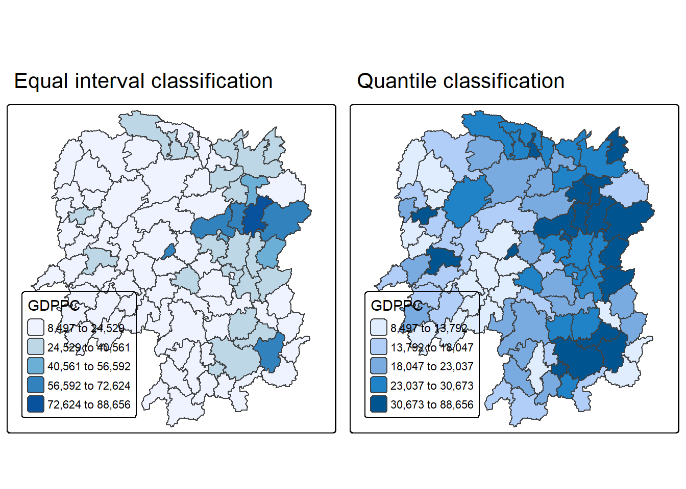

pacman::p_load(sf, spdep, tmap, tidyverse)Hands-on Exercise 05a: Global Measures of Spatial Autocorrelation
1 Overview
This hands_on exercise is to compute Global Measures of Spatial Autocorrelation (GMSA) by using spdep package. By the end to this hands-on exercise, you will be able to:
import geospatial data using appropriate function(s) of sf package,
import csv file using appropriate function of readr package,
perform relational join using appropriate join function of dplyr package,
compute Global Spatial Autocorrelation (GSA) statistics by using appropriate functions of spdep package,
plot Moran scatterplot,
compute and plot spatial correlogram using appropriate function of spdep package.
provide statistically correct interpretation of GSA statistics.
spdep: compute spatial weights and global and local spatial autocorrelation statistics
2 Importing the Data
2.1 Importing the Shapefile
hunan <- st_read(dsn = "data/geospatial",
layer = "Hunan")Reading layer `Hunan' from data source
`C:\ppthaw2024\ISSS626-Geospatial\Hands_on_Ex\Hands_on_Ex05\data\geospatial'
using driver `ESRI Shapefile'
Simple feature collection with 88 features and 7 fields
Geometry type: POLYGON
Dimension: XY
Bounding box: xmin: 108.7831 ymin: 24.6342 xmax: 114.2544 ymax: 30.12812
Geodetic CRS: WGS 842.2 Importing the csv file
hunan2012 <- read_csv("data/aspatial/Hunan_2012.csv")2.3 Performing a Relational Join
The attribute table of hunan’s SpatialPolygonsDataFrame will be updated with the attribute fields of hunan2012 dataframe.
hunan <- left_join(hunan,hunan2012) %>%
select(1:4, 7, 15)2.4 Visualising the Regional Development Indicator
A base map and choropleth map will be plotted, showing the distribution of GDPPC 2012.
equal <- tm_shape(hunan) +
tm_polygons(fill = "GDPPC",
fill.scale = tm_scale_intervals(
style = "equal",
n = 5,
values = "brewer.blues")) +
tm_borders(fiil_alpha = 0.5) +
tm_layout(legend.position = c("left", "bottom"),
main.title = "Equal interval classification")
quantile <- tm_shape(hunan) +
tm_polygons(fill = "GDPPC",
fill.scale = tm_scale_intervals(
style = "quantile",
n = 5)) +
tm_borders(fiil_alpha = 0.5) +
tm_layout(legend.position = c("left", "bottom"),
main.title = "Quantile classification")
tmap_arrange(equal,
quantile,
asp=1,
ncol=2)
3 Global Measures of Spatial Autocorrelation
The core concept of Spatial Autocorrelation relates to Tobler’s First Law of Geography, where “Everything is related to everything else, but near things are more related than distant things”.
3.1 Computing Contiguity Spatial Weights
Spatial weights of a study area is required to compute the global spatial autocorrelation statistics.
poly2nb() of spdep package is used to compute contiguity weight matrices for the study area. For the below, Queen contiguity weight matrix is computed.
wm_q <- poly2nb(hunan,
queen=TRUE)
summary(wm_q)Neighbour list object:
Number of regions: 88
Number of nonzero links: 448
Percentage nonzero weights: 5.785124
Average number of links: 5.090909
Link number distribution:
1 2 3 4 5 6 7 8 9 11
2 2 12 16 24 14 11 4 2 1
2 least connected regions:
30 65 with 1 link
1 most connected region:
85 with 11 linksThe summary report above shows that there are 88 area units in Hunan. The most connected area unit has 11 neighbours. There are two area units with only one neighbour.
3.2 Row-standardised weights matrix
rswm_q <- nb2listw(wm_q,
style="W",
zero.policy = TRUE)
rswm_qCharacteristics of weights list object:
Neighbour list object:
Number of regions: 88
Number of nonzero links: 448
Percentage nonzero weights: 5.785124
Average number of links: 5.090909
Weights style: W
Weights constants summary:
n nn S0 S1 S2
W 88 7744 88 37.86334 365.91473.3 Global Measures of Spatial Autocorrelation: Moran’s I
3.3.1 Maron’s I test
moran.test(hunan$GDPPC,
listw=rswm_q,
zero.policy = TRUE,
na.action=na.omit)
Moran I test under randomisation
data: hunan$GDPPC
weights: rswm_q
Moran I statistic standard deviate = 4.7351, p-value = 1.095e-06
alternative hypothesis: greater
sample estimates:
Moran I statistic Expectation Variance
0.300749970 -0.011494253 0.004348351 Based on the results, Moran’s I is 0.301, indicating a strong positive spatial autocorrelation at the 99% confidence level.
This suggests that GDP per capita (GDPPC) is spatially clustered, with high-GDPPC counties generally located near other high-GDPPC counties, and low-GDPPC counties situated near other low-GDPPC counties.
3.3.2 Computing Monte Carlo Moran’s I
Using moran.mc(), 999 simulations will be performed for the Moran’s I statistic.
set.seed(1234)
bperm= moran.mc(hunan$GDPPC,
listw=rswm_q,
nsim=999,
zero.policy = TRUE,
na.action=na.omit)
bperm
Monte-Carlo simulation of Moran I
data: hunan$GDPPC
weights: rswm_q
number of simulations + 1: 1000
statistic = 0.30075, observed rank = 1000, p-value = 0.001
alternative hypothesis: greater3.3.3 Visualising Monte Carlo Moran’s I
From the simulations, we observe the test statistics using mean, variance and other distribution metrics.
mean(bperm$res[1:999])[1] -0.01504572var(bperm$res[1:999])[1] 0.004371574summary(bperm$res[1:999]) Min. 1st Qu. Median Mean 3rd Qu. Max.
-0.18339 -0.06168 -0.02125 -0.01505 0.02611 0.27593 Using base graph to plot the values.
hist(bperm$res,
freq=TRUE,
breaks=20,
xlab="Simulated Moran's I")
abline(v=0,
col="red") 
Since Moran’s I is greater than the expected value E(I)E(I)E(I) under the null hypothesis of no spatial autocorrelation, the results indicate a stronger clustering pattern (positive spatial autocorrelation) than would be expected if the data were randomly distributed.
3.4 Global Measures of Spatial Autocorrelation: Geary’s C
3.4.1 Geary’s C test
geary.test(hunan$GDPPC, listw=rswm_q)
Geary C test under randomisation
data: hunan$GDPPC
weights: rswm_q
Geary C statistic standard deviate = 3.6108, p-value = 0.0001526
alternative hypothesis: Expectation greater than statistic
sample estimates:
Geary C statistic Expectation Variance
0.6907223 1.0000000 0.0073364 The results show that Geary’s C is 0.691 (below 1), indicating strong positive spatial autocorrelation at the 99% confidence level.
This implies that GDP per capita (GDPPC) is spatially clustered, with high-GDPPC counties located close to other high-GDPPC counties, and low-GDPPC counties likewise concentrated near one another.
3.4.2 Computing Monte Carlo Geary’s C
set.seed(1234)
bperm=geary.mc(hunan$GDPPC,
listw=rswm_q,
nsim=999)
bperm
Monte-Carlo simulation of Geary C
data: hunan$GDPPC
weights: rswm_q
number of simulations + 1: 1000
statistic = 0.69072, observed rank = 1, p-value = 0.001
alternative hypothesis: greaterFrom the p-value = 0.001, we can conclude at a 99% confidence interval that we can reject the null hypothesis of no spatial autocorrelation.
3.4.3 Visualising the Monte Carlo Geary’s C
mean(bperm$res[1:999])[1] 1.004402var(bperm$res[1:999])[1] 0.007436493summary(bperm$res[1:999]) Min. 1st Qu. Median Mean 3rd Qu. Max.
0.7142 0.9502 1.0052 1.0044 1.0595 1.2722 hist(bperm$res, freq=TRUE, breaks=20, xlab="Simulated Geary c")
abline(v=1, col="red") 
4 Spatial Correlogram
Spatial correlograms are great to examine patterns of spatial autocorrelation in your data or model residuals. They show how correlated are pairs of spatial observations when you increase the distance (lag) between them - they are plots of some index of autocorrelation (Moran’s I or Geary’s c) against distance.Although correlograms are not as fundamental as variograms (a keystone concept of geostatistics), they are very useful as an exploratory and descriptive tool. For this purpose they actually provide richer information than variograms.
4.1 Compute Moran’s I correlogram
sp.correlogram() from spdep is used to compute a 6-lag spatial correlogram of GDPPC. The global spatial autocorrelation method used is Moran’s I.
MI_corr <- sp.correlogram(wm_q,
hunan$GDPPC,
order=6,
method="I",
style="W")
plot(MI_corr)
print(MI_corr)Spatial correlogram for hunan$GDPPC
method: Moran's I
estimate expectation variance standard deviate Pr(I) two sided
1 (88) 0.3007500 -0.0114943 0.0043484 4.7351 2.189e-06 ***
2 (88) 0.2060084 -0.0114943 0.0020962 4.7505 2.029e-06 ***
3 (88) 0.0668273 -0.0114943 0.0014602 2.0496 0.040400 *
4 (88) 0.0299470 -0.0114943 0.0011717 1.2107 0.226015
5 (88) -0.1530471 -0.0114943 0.0012440 -4.0134 5.984e-05 ***
6 (88) -0.1187070 -0.0114943 0.0016791 -2.6164 0.008886 **
---
Signif. codes: 0 '***' 0.001 '**' 0.01 '*' 0.05 '.' 0.1 ' ' 1The spatial correlogram shows that Moran’s I declines as the lag increases (e.g., Lag 1: 0.301; Lag 2: 0.206). This suggests that strong and significant clustering occurs among immediate neighbors, but the clustering effect weakens and becomes insignificant as the distance increases.
At Lags 5 and 6, Moran’s I turns negative, indicating a dispersed pattern (or strong negative spatial autocorrelation) at greater distances.
4.2 Compute Geary’s C correlogram and plot
GC_corr <- sp.correlogram(wm_q,
hunan$GDPPC,
order=6,
method="C",
style="W")
plot(GC_corr)
print(GC_corr)Spatial correlogram for hunan$GDPPC
method: Geary's C
estimate expectation variance standard deviate Pr(I) two sided
1 (88) 0.6907223 1.0000000 0.0073364 -3.6108 0.0003052 ***
2 (88) 0.7630197 1.0000000 0.0049126 -3.3811 0.0007220 ***
3 (88) 0.9397299 1.0000000 0.0049005 -0.8610 0.3892612
4 (88) 1.0098462 1.0000000 0.0039631 0.1564 0.8757128
5 (88) 1.2008204 1.0000000 0.0035568 3.3673 0.0007592 ***
6 (88) 1.0773386 1.0000000 0.0058042 1.0151 0.3100407
---
Signif. codes: 0 '***' 0.001 '**' 0.01 '*' 0.05 '.' 0.1 ' ' 1Geary’s C is an inverse measure of spatial autocorrelation compared to Moran’s I, hence we see the similar outcome from the Geary’s C estimates.
At Lag 1 and 2, Geary’s C < 1, indicating strong positive autocorrelation. At Lag 3 and 4, Geary’s C ~ 1, which means there is no significant spatial autocorrelation. At Lag 5 and 6, Geary’s C > 1, there is strong negative autocorrelation (dispersion).